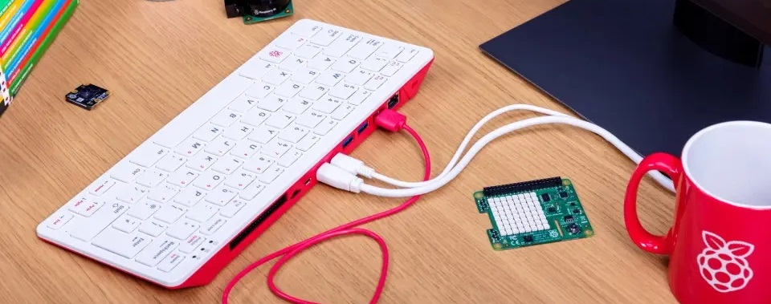

Projet - Linux & Mariadb
Projet d'IUT réalisé entièrement en anglais orienté administration système (SysOp). Notre objectif était d’installer un système d’exploitation Linux sur un Raspberry Pi 400, puis d’y configurer un système de gestion de base de données (SGBD) fonctionnel. Ce projet, à forte dominante pratique, visait à développer nos compétences d’autonomie, de recherche documentaire, et de configuration logicielle dans un environnement contraint.
Ce projet m’a permis d’acquérir des compétences solides en :
- Installation d’un OS Linux sur carte SD (utilisation de rpi-imager sous Debian),
- Utilisation avancée du terminal, y compris gestion d’utilisateurs et configuration réseau via ligne de commande,
- Déploiement d’un SGBD (MariaDB) en ligne de commande et initialisation d’une base de données conforme à un schéma donné,
- Diagnostic et résolution de problèmes liés à l’heure système, au réseau local et aux permissions Unix.
L'ensemble de l'installation était évaluée automatiquement par script, vérifiant la présence et la conformité des tables dans la base de données, la connectivité SSH, ainsi que la configuration du de la machine pour un démarrage autonome à froid.